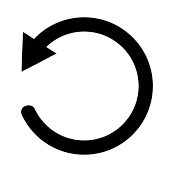
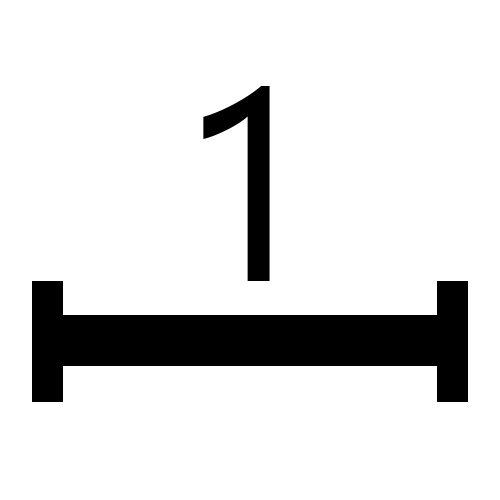

Recto
Verso
Standard (RGB/Color)
Graphical Filters
Facsimile
Brightness
Contrast
Saturation
Sharpness
Colour Inversion
R
G
B
B&W

Reset
Download Model
Compute Facsimile (may take some time)
Threshold Black Ink
0.20
Threshold Red Ink
0.20
Papyrus Stroke Width
5
Anti-Aliasing
0
Computation of Facsimile is Needed First
Change Layout

Show/Hide Scale
JPG
Select JPG Color
PNG
TIFF
Download Size
Download
Close